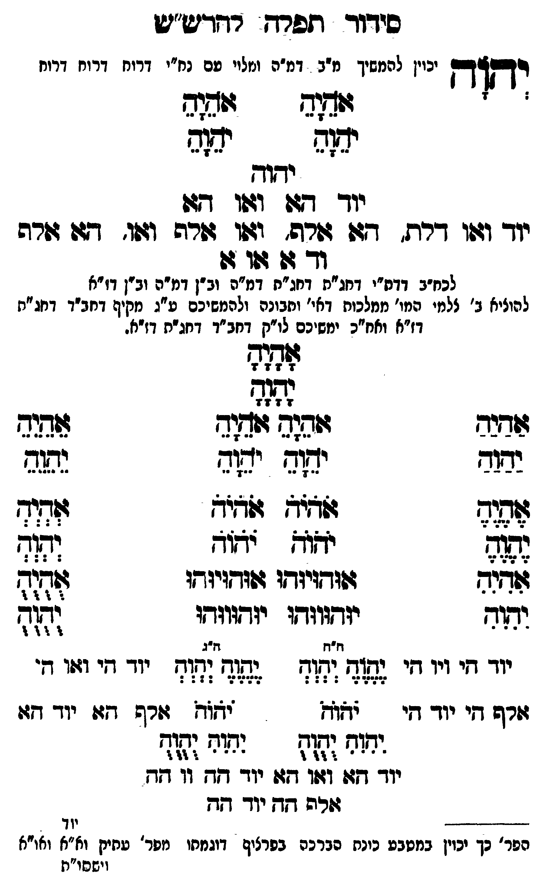

Neue Klartextfassung
יְהוָה [יכוין להמשיך מ"ב דמ"ה ומלויו עם נח"י דרוח דרוח דרוח] === טבלה === [טור ימין] אָהָיָהָ יָהָוָהָ [טור שמאל] אָהָיָהָ יָהָוָהָ === סוף טבלה === יהוה יוד הא ואו הא יוד ואו דלת, הא אלף, ואו אלף ואו, הא אלף וד א או א [לכח"ב דדת"י דחג"ת דחג"ת דמ"ה וב"ן דמ"ה וב"ן דז"א] [להעלות ב' צלמי המו' ממלכות דאו' ותבונה ולהמשיכם ע"ג מקיף דחב"ד דחג"ת דז"א וחו"ב ימשיכם לו"ק דחב"ד דחג"ת דז"א.] === טבלה === [טור ימין] אַהַיַהַ יַהַוַהַ אֶהֶיֶהֶ יֶהֶוֶהֶ אִהִיִהִ יִהִוִהִ יוד הי ויו הי אלף הי יוד הי [טור אמצעי] אָהָיָהָ יָהָוָהָ אֹהֵיָהֵ אֹהֵיָהֵ יֹהֵוָהֵ יֹהֵוָהֵ אֹהֹיֹהֹ אֹהֹיֹהֹ יֹהֹוֹהֹ יֹהֹוֹהֹ אוּהוּיוּהוּ אוּהוּיוּהוּ יוּהוּווּהוּ יוּהוּווּהוּ [ה"ח ה"ג] יֶהֶוֶהֶ יְהְוְהְ יֶהֶוֶהֶ יְהְוְהְ יֹהֹוֹהֹ יֹהֹוֹהֹ יִהִוִהִ יֻהֻוֻהֻ יִהִוִהִ יֻהֻוֻהֻ יוד הא ואו הא יוד הה וו הה אלף הה יוד הה [טור שמאל] אֵהֵיֵהֵ יֵהֵוֵהֵ אְהְיְהְ יְהְוְהְ אֻהֻיֻהֻ יֻהֻוֻהֻ יוד הי ואו הי אלף הא יוד הא === סוף טבלה ===
Original gegen neue OCR · Niqqud für Vergleich ausgeblendet
Original
יהוה [יכויןK021-001 להמשיך מ"ב דמ"ה ומלויו עםK021-002 נח"י דרוח דרוח דרוח] === טבלה === [טור ימין] אהיה יהוה [טור שמאל] אהיה יהוה === סוף טבלה === יהוה יוד הא ואו הא יוד ואו דלת, הא אלף, ואו אלף ואו, הא אלף וד א או א [לכח"ב דדת"י דחג"ת דחג"תK021-003 דמ"ה וב"ן דמ"ה וב"ן דז"א] [להעלותK021-004 ב' צלמי המו' ממלכות דאו' ותבונהK021-005 ולהמשיכם ע"ג מקיףK021-006 דחב"ד דחג"ת דז"א וחו"בK021-007 ימשיכם לו"ק דחב"ד דחג"ת דז"א.] === טבלה === [טור ימין] אהיה יהוה אהיה יהוה אהיה יהוהK021-008 יוד הי ויו הי אלף היK021-009 יוד הי [טור אמצעי] אהיה יהוה אהיה אהיה יהוה יהוה אהיה אהיה יהוה יהוה אוהויוהו אוהויוהו יוהוווהו יוהוווהו [ה"ח ה"ג] יהוה יהוה יהוה יהוה יהוה יהוה יהוה יהוה יהוה יהוהK021-010 יוד הא ואו האK021-011 יוד הה וו הה אלף ההK021-012 יוד הה [טור שמאל] אהיה יהוה אהיה יהוה אהיה יהוה יוד הי ואו הי אלף הא יוד הא === סוף טבלה ===K021-013
OCR · fehlbar
סידוד תפרד רדדיש"ט יכוין להמשי דב דמיה י "ו ידק"ך כויןK021-001 להמשיך מ"ב דמ"ה ומלוי טםK021-002 נח"י דרוח דרוח דרוח : אף זוחוש זבוב ימ(ש יד(ב ידוד יודך 4( וזו דףו יוך וגפו דרת. דש שרה' ושו שרה וז(ו'. 47ו דזרה וך 07 זו ז: לבח"ב דדח"י דחג"ח דחג"חK021-003 דמ"ה וב"ן דמ"ה וב"ן דז"א להוציאK021-004 ב' צלמי המו' ממלכוח דאי' וזבונהK021-005 ולהמשיכם ע"ג זקיףK021-006 דחב"ד דחג"ת דז"א ואח"כK021-007 ימשיכם לו"ק דחב"ד דחג"ח דזרא. [ג(3 שבבס ונ וזתזד שגוד נבגב ישוש ידוד צסזב שוד זשדנ4 זלדיש 423 א: א[לא אל שדד זזודזיזדו וזודזיוחו לללל יתוד יזדווודו יוךוו:דו (ז. ח"ץ ז"ג יוי וי יי די ז( זז נ (7 יד זי ייי ' גורש חיK021-008 יוד די זא(-- יתזד זרש חז:K021-009 יוד דזיו שד וג1זה ו([ד(ך נק"ח - - - - 4 44 4 - - - - :ו 4 4 יודך ף: ו4ו1 40:K021-010 יוד חד וו 7 גורפ דזדK021-011 יוד דד -----K021-012 יוד הפר' כך יכוין במטבע כינח הברכה בפרציף דוגנזתו מפר' עחיק וא"א ואו"א וישסו"תK021-013